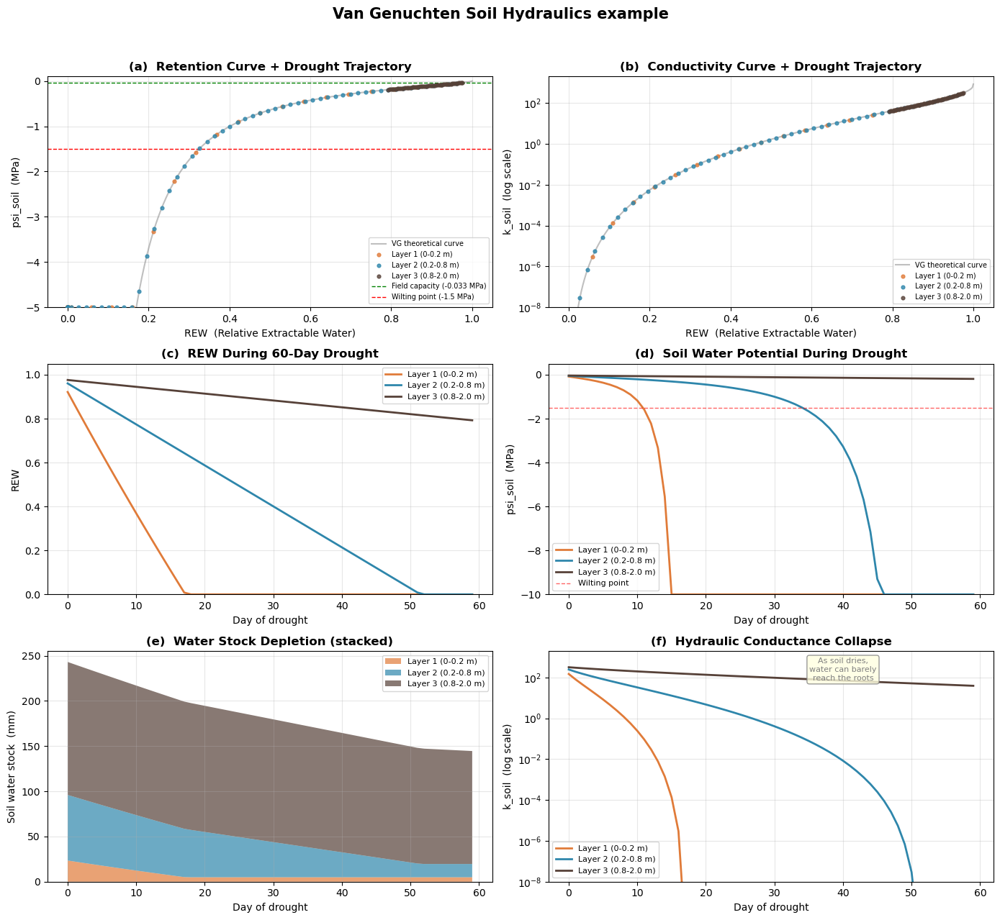

import numpy as np
import matplotlib.pyplot as pltSurEau soil hydraulics
The overall goal of SurEau soil hydraulics is calculate the soil water potential and soil water conductivity given the amount of water (mm) available
compute_soil_VG
def compute_soil_VG(
soil:SurEauSoil, params:SurEauSoilParams
)->SurEauSoil:
Van Genuchten: transform soil moisture → water potential & conductance.
ANALOGY — The Sponge Squeeze: ─────────────────────────────
Imagine each soil layer is a sponge sitting in a bucket.
REW (Relative Extractable Water) tells you what fraction of the sponge’s usable capacity is still filled.
REW = 1 means soaking wet, REW = 0 means only residual water trapped in the tiniest pores remains.
k_soil (hydraulic conductance) tells you how fast water can flow through that sponge. A wet sponge lets water through easily; a nearly dry one barely lets anything pass.
psi_soil (water potential) tells you how hard the sponge is gripping its remaining water. A wet sponge barely holds on (ψ ≈ 0); a dry sponge clings to the last drops with enormous force (ψ << 0).
Equations implemented: REW = (stock - residual) / (saturation - residual) [Eq. 22] k_soil = Ksat × B_GC × REW^I × (1-(1-REW(1/m))m)² [Eq. 21 variant] psi_soil = -((1/REW)^(1/m) - 1)^(1/n) / (α × 10000) [Eq. 48]
INPUTS
──────
soil.soil_water_stock [mm per layer] — current water
params.V_saturation_capacity [mm per layer] — max capacity
params.V_residual_capacity [mm per layer] — trapped water
params.alpha_vg [cm⁻¹] — air-entry
params.n_vg [−] — pore-size index
params.m = 1 − 1/n [−] — derived shape
params.I_vg [−] — tortuosity
params.Ksat [mmol/m/s/MPa] — saturated K
params.B_GC [−] — root geometry
params.offset_psoil [MPa] — calibration shift
│
▼
┌─────────────────────────────────────────────────────────┐
│ │
│ EQUATION 22: REW (per layer) │
│ "What fraction of usable water remains?" │
│ │
│ max_water = V_saturation − V_residual │
│ eff_water = soil_water_stock − V_residual │
│ │
│ eff_water │
│ REW = ─────────── clipped to [0.0001, 1.0] │
│ max_water │
│ │
│ REW = 1.0 → fully saturated │
│ REW = 0.5 → half the usable water remains │
│ REW = 0.0 → only residual water left │
│ │
└────────────────────────┬────────────────────────────────┘
│
┌──────────┴──────────┐
▼ ▼
┌──────────────────────────┐ ┌─────────────────────────────────┐
│ │ │ │
│ EQUATION 21: k_soil │ │ EQUATION 48: ψ_soil │
│ (per layer) │ │ (per layer) │
│ "How easily can water │ │ "How tightly is the │
│ flow to the roots?" │ │ remaining water held?" │
│ │ │ │
│ │ │ Given: REW, α, n, m = 1−1/n │
│ PART A: relative K │ │ │
│ (Mualem-VG, 0 to 1) │ │ Step 1: Invert saturation │
│ │ │ x₁ = 1 / REW │
│ Factor 1: Tortuosity │ │ │
│ ┌─────────────────────┐ │ │ wet REW=1.0 → x₁ = 1 │
│ │ REW ^ I_vg │ │ │ half REW=0.5 → x₁ = 2 │
│ │ │ │ │ dry REW=0.1 → x₁ = 10 │
│ │ Water must detour │ │ │ │
│ │ around air-filled │ │ │ Step 2: Apply VG shape │
│ │ pores. Fewer water │ │ │ x₂ = x₁ ^ (1/m) │
│ │ channels = more │ │ │ │
│ │ detours. │ │ │ Since m<1, exponent 1/m > 1 │
│ └─────────────────────┘ │ │ This AMPLIFIES dryness │
│ × │ │ │
│ Factor 2: Connectivity │ │ Step 3: Zero at saturation │
│ ┌─────────────────────┐ │ │ x₃ = x₂ − 1 │
│ │ │ │ │ │
│ │ [1 − (1 − REW │ │ │ When REW=1: x₃=0 → ψ=0 │
│ │ ^(1/m)) ^ m]² │ │ │ (no suction when saturated) │
│ │ │ │ │ │
│ │ As soil dries, big │ │ │ Step 4: Pore-size scaling │
│ │ pores drain first, │ │ │ x₄ = x₃ ^ (1/n) │
│ │ remaining paths │ │ │ │
│ │ disconnect. │ │ │ n controls steepness: │
│ │ Squaring from │ │ │ high n (sand) → steep drop │
│ │ Mualem (1976). │ │ │ low n (clay) → gradual drop │
│ └─────────────────────┘ │ │ │
│ = │ │ Step 5: Air-entry pressure │
│ k_temp │ │ x₅ = x₄ / α │
│ │ │ │
│ │ │ α (cm⁻¹) ≈ inverse of the │
│ PART B: absolute K │ │ pressure needed to push air │
│ (scale to real units) │ │ into the largest pores │
│ │ │ Result is in cm H₂O │
│ k_soil = 1000 │ │ │
│ × Ksat │ │ Step 6: Unit conversion │
│ × B_GC │ │ x₆ = x₅ / 10000 │
│ × k_temp │ │ │
│ │ │ cm H₂O → MPa │
│ where B_GC comes from │ │ (1 MPa ≈ 10197 cm ≈ 10000) │
│ init_par_soil(): │ │ │
│ │ │ Step 7: Sign and offset │
│ B_GC = La × 2π │ │ ψ = −x₆ − offset │
│ ────────── │ │ │
│ ln(b / r_root) │ │ Negate: suction ≤ 0 │
│ │ │ Offset: calibration │
│ │ │ (usually 0) │
│ (Gardner-Cowan root │ │ │
│ geometry factor, │ │ In code (one line): │
│ Eq. 21 in the paper) │ │ ψ = −((1/REW)^(1/m)−1)^(1/n) │
│ │ │ / α / 10000 − offset │
│ │ │ │
│ Result examples: │ │ Result examples: │
│ (loam, I=0.5) │ │ (loam, α=0.0005, n=1.55) │
│ │ │ │
│ REW=1.00 → k_temp=1.00 │ │ REW=1.00 → ψ = 0.000 MPa │
│ REW=0.50 → k_temp=0.11 │ │ REW=0.50 → ψ = −0.068 MPa │
│ REW=0.10 → k_temp=0.001 │ │ REW=0.20 → ψ = −0.437 MPa │
│ │ │ REW=0.05 → ψ = −3.976 MPa │
│ Units: mmol/m²/s/MPa │ │ REW=0.01 → ψ = −41.56 MPa │
│ │ │ │
│ │ │ Units: MPa (always ≤ 0) │
│ │ │ │
└────────────┬─────────────┘ └───────────────┬─────────────────┘
│ │
▼ ▼
Used by solver: Used by solver:
update_kplant() sureau_solver()
│ │
▼ ▼
Eq. 20: k_soil_to_stem Eqs. 5,10,11,12:
= series(k_soil, k_RSApo) ψ_soil is boundary
"plumbing from soil condition for water
through roots" uptake gradients
│ │
└───────────────┬───────────────┘
│
▼
OUTPUTS
───────
soil.REW [− per layer] → used by evaporation
soil.k_soil [mmol/m²/s/MPa] → used by solver (Eq. 20)
soil.psi_soil [MPa per layer] → used by solver (Eqs. 5–12)
soil.RWC [− whole profile] → diagnostic
soil.REW_tot [− whole profile] → diagnostic
soil.REW_wp [− whole profile] → diagnostic
compute_soil_Campbell
def compute_soil_Campbell(
soil:SurEauSoil, params:SurEauSoilParams
)->SurEauSoil:
Campbell kSoil and PsiSoil using a ower-law relationships ψ = ψ_e × (θ/θ_s)^(−b) K = K_sat × (θ/θ_s)^(2b+3)
Transform soil moisture into water potential and k conductance
soil.soil_water_stock (mm per layer)
params.V_saturation_capacity (mm per
layer)
│
▼
┌──────────────────────────────┐
│ SATURATION RATIO (per │
│ layer) ratio = SWS / V_sat │
│ (0 = bone dry, 1 = full) │
└─────────────┬────────────────┘
│
┌───────┴───────┐
▼ ▼
┌────────────┐ ┌───────────────┐
│ k_soil │ │ ψ_soil │
│ │ │ │
│ ratio^ │ │ −ψ_e × │
│ (2−2b) │ │ ratio^(−b) │
│ │ │ − offset │
│ ⚠ MISSING: │ │ │
│ × Ksat×B_GC│ │ Units: MPa │
│ (BUG?) │ │ │
└─────┬──────┘ └──────┬────────┘
│ │
▼ ▼
Used by solver Used by solver
(how easily (how tightly
water flows) water is held)compute_soil_conductance_and_psi
def compute_soil_conductance_and_psi(
soil:SurEauSoil, params:SurEauSoilParams
)->SurEauSoil:
Dispatch to VG or Campbell.
compute_infiltration
def compute_infiltration(
soil:SurEauSoil, params:SurEauSoilParams, ppt_soil, cst_infil:float=0.7
)->SurEauSoil:
Infiltration through soil layers, then update psi/k.
ANALOGY — Stacked Buckets: ────────────────────────── Picture 3 buckets stacked on top of each other, each with a small hole at the bottom.
Phase 1 Percolation (slow drip): Before rain arrives, any bucket already above its “comfortable full” line (field capacity) slowly drips into the one below.
The cst_infil parameter (0.7) means 70% of the excess drips per timestep, not everything at once, like a slow leak.
Phase 2 Add rainfall: Pour the rain into the top bucket.
Phase 3 Surcharge (overflow): If any bucket is now above its absolute maximum (saturation), the excess instantly spills into the bucket below. The bottom bucket’s overflow becomes deep drainage — water lost from the system.
Previous timestep's soil water
│
▼
┌──────────────────┐
│ PERCOLATION LOOP │ ← Drain excess above field capacity (70% per step)
│ (gravity drain) │ Water cascades downward layer by layer
└────────┬─────────┘
│
▼
┌──────────────────┐
│ ADD RAINFALL │ ← Throughfall enters top layer
└────────┬─────────┘
│
▼
┌──────────────────┐
│ SURCHARGE LOOP │ ← Drain ALL excess above saturation capacity
│ (overflow) │ Water cascades downward layer by layer
└────────┬─────────┘
│
▼
Save SWS, compute drainage,
update ψ_soil and update_soil_water
def update_soil_water(
soil:SurEauSoil, params:SurEauSoilParams, flux_evap
)->SurEauSoil:
Subtract transpiration flux from soil and update.
ANALOGY — Roots are Straws:
The plant’s roots act like straws stuck into each bucket. The transpiration flux tells you how many millimetres of water each straw sucked out during this timestep. We simply subtract that amount and then recompute the sponge’s grip (ψ) and permeability (k).
set_SWC_to_field_capacity
def set_SWC_to_field_capacity(
soil:SurEauSoil, params:SurEauSoilParams, layers:NoneType=None
)->SurEauSoil:
Reset soil water stock to field capacity.
ANALOGY — Refilling the Sponge:
After a long rainy spell, the soil drains freely until each layer reaches its “comfortable full” level — field capacity. This function is the equivalent of saying “pretend it just rained enough to fill the sponge back to its comfortable level.”
compute_evaporation
def compute_evaporation(
soil:SurEauSoil, params:SurEauSoilParams, T_air, RH_air, N_hours
)->SurEauSoil:
Soil surface evaporation (Equation 35).
ANALOGY — Drying the Top of the Sponge:
Only the TOP bucket loses water to the atmosphere directly. How fast it dries depends on: - How dry the air is (VPD — the “thirst” of the atmosphere) - How wet the top layer still is (REW₁ — a self-limiting brake) - How breathable the soil surface is (g_soil0)
On a hot dry day with wet topsoil: evaporation is high. On a humid day with dry topsoil: evaporation is negligible.
Equation 35: E_soil = g_soil0 × REW₁ × VPD / P_atm
Soil surface evaporation (topsoil only)
Paper: Equation 35, Section 2.4.2
INPUTS
──────
T_air [°C] — air temperature this timestep
RH_air [%] — air relative humidity
N_hours [hours] — duration of this timestep
soil.ETP [mm] — potential ET allocated to soil
soil.REW[0] [−] — topsoil relative extractable water
params.g_soil0 [mmol/m²soil/s] — max soil vapor conductance
│
▼
┌─────────────────────────────────────────────────────────────┐
│ │
│ STEP 1: Estimate soil surface temperature │
│ (empirical regression, fitted at O3HP France) │
│ │
│ T_soil = 0.6009 × T_air + 3.59 │
│ │
│ Example: T_air = 30°C → T_soil = 21.6°C │
│ │
│ Why? Soil is cooler than air due to thermal │
│ inertia — the evaporating surface temperature │
│ sets the saturation vapor pressure. │
│ │
└────────────────────────┬────────────────────────────────────┘
│
▼
┌─────────────────────────────────────────────────────────────┐
│ │
│ STEP 2: Compute VPD at the soil surface │
│ │
│ VPD_soil = e_sat(T_soil) − e_air(RH_air, T_soil) │
│ │
│ e_sat at SOIL temperature (evaporating surface) │
│ e_air from AIR humidity (atmosphere above) │
│ │
│ Units: kPa │
│ │
└────────────────────────┬────────────────────────────────────┘
│
▼
┌─────────────────────────────────────────────────────────────┐
│ │
│ STEP 3: Frozen soil check │
│ │
│ T_soil < 0 °C ? │
│ ╱ ╲ │
│ YES NO │
│ │ │ │
│ ▼ ▼ │
│ evaporation = 0 continue to Step 4 │
│ (ice doesn't │
│ evaporate │
│ in this model) │
│ │
└────────────────────────┬────────────────────────────────────┘
│ (T_soil ≥ 0)
▼
┌─────────────────────────────────────────────────────────────┐
│ │
│ STEP 4: VPD-limited evaporation rate │
│ ═══════════════════════════════════ │
│ EQUATION 35 from the paper │
│ │
│ g_soil0 × REW₁ × VPD_soil │
│ E_VPD = ───────────────────────────── │
│ P_atm │
│ │
│ ┌───────────────────────────────────────────────────┐ │
│ │ g_soil0 Max soil vapor conductance │ │
│ │ "How breathable is the soil │ │
│ │ surface when fully wet?" │ │
│ │ [mmol/m²soil/s] │ │
│ ├───────────────────────────────────────────────────┤ │
│ │ REW[0] Topsoil relative extractable water │ │
│ │ "How wet is the top layer?" │ │
│ │ Scales conductance: dry soil │ │
│ │ self-limits its own evaporation │ │
│ │ [−, 0 to 1] │ │
│ ├───────────────────────────────────────────────────┤ │
│ │ VPD_soil Vapor pressure deficit at surface │ │
│ │ "How thirsty is the air?" │ │
│ │ [kPa] │ │
│ ├───────────────────────────────────────────────────┤ │
│ │ P_atm Atmospheric pressure = 101.3 │ │
│ │ Converts conductance to flux │ │
│ │ [kPa] │ │
│ └───────────────────────────────────────────────────┘ │
│ │
│ Result: E_VPD [mmol/m²soil/s] │
│ "How fast the soil WANTS to evaporate"? │
│ │
└────────────────────────┬────────────────────────────────────┘
│
▼
┌─────────────────────────────────────────────────────────────┐
│ │
│ STEP 5: ETP-limited evaporation rate │
│ ════════════════════════════════════ │
│ (operational constraint, not a paper equation) │
│ │
│ Sub-step A: Convert ETP from mm to mmol/m²/s │
│ │
│ soil.ETP × 1e6 │
│ ETP_mmol_s = ───────────────────── │
│ 3600 × N_hours × 18 │
│ │
│ ┌───────────────────────────────────────────┐ │
│ │ soil.ETP PET allocated to soil [mm] │ │
│ │ (split from total ETP │ │
│ │ upstream using LAI) │ │
│ ├───────────────────────────────────────────┤ │
│ │ 1e6 mm → µL/m² (≈ µg/m²) │ │
│ ├───────────────────────────────────────────┤ │
│ │ 3600×N_hours hours → seconds │ │
│ ├───────────────────────────────────────────┤ │
│ │ 18 molar mass of H₂O [g/mol] │ │
│ └───────────────────────────────────────────┘ │
│ │
│ Sub-step B: Scale by topsoil moisture │
│ │
│ E_ETP = ETP_mmol_s × REW[0] │
│ │
│ "Even with unlimited energy, can't evaporate │
│ water that isn't there" │
│ │
│ Result: E_ETP [mmol/m²soil/s] │
│ "How fast the ENERGY BUDGET allows evaporation" │
│ │
└────────────────────────┬────────────────────────────────────┘
│
▼
┌─────────────────────────────────────────────────────────────┐
│ │
│ STEP 6: Take the binding constraint │
│ │
│ E_soil = min( E_VPD , E_ETP ) │
│ │
│ ┌──────────────────────┬──────────────────────────┐ │
│ │ Scenario │ Which binds? │ │
│ ├──────────────────────┼──────────────────────────┤ │
│ │ Humid cloudy day, │ E_VPD is small │ │
│ │ wet soil │ (air already moist) │ │
│ │ │ → VPD is bottleneck │ │
│ ├──────────────────────┼──────────────────────────┤ │
│ │ Sunny dry day, │ E_ETP may be smaller │ │
│ │ dry topsoil │ (low REW limits both, │ │
│ │ │ but energy may cap it) │ │
│ ├──────────────────────┼──────────────────────────┤ │
│ │ Night (no sun), │ E_ETP ≈ 0 │ │
│ │ any soil moisture │ → energy is bottleneck │ │
│ └──────────────────────┴──────────────────────────┘ │
│ │
│ Result: E_soil [mmol/m²soil/s] │
│ │
└────────────────────────┬────────────────────────────────────┘
│
▼
┌─────────────────────────────────────────────────────────────┐
│ │
│ STEP 7: Convert rate → water depth │
│ │
│ evaporation = E_soil × LAI × N_hours × 0.0648 │
│ │
│ where LAI = 1.0 (already per m²soil) │
│ and 0.0648 = 3600 × 18 / 1e6 │
│ (inverse of the conversion in Step 5) │
│ │
│ mmol/m²/s × hours × 0.0648 → mm │
│ │
│ Result: evaporation [mm over this timestep] │
│ │
└────────────────────────┬────────────────────────────────────┘
│
▼
┌─────────────────────────────────────────────────────────────┐
│ │
│ STEP 8: Subtract from topsoil and update │
│ │
│ soil_water_stock[0] -= evaporation │
│ │
│ Only the FIRST layer loses water to evaporation. │
│ Deeper layers are unaffected (no capillary rise │
│ in this model — see paper Section 2.2.2: │
│ "upward capillary transfers between layers │
│ are neglected") │
│ │
│ Then recompute for ALL layers: │
│ ┌───────────────────────────────────────────┐ │
│ │ compute_soil_conductance_and_psi() │ │
│ │ │ │
│ │ → REW (Eq. 22) │ │
│ │ → k_soil (Eq. 21) │ │
│ │ → ψ_soil (Eq. 48) │ │
│ │ │ │
│ │ Because water content changed, the │ │
│ │ hydraulic solver needs fresh values. │ │
│ └───────────────────────────────────────────┘ │
│ │
└─────────────────────────────────────────────────────────────┘
OUTPUTS
───────
soil.evaporation [mm] — water lost this timestep
soil.soil_water_stock [mm per layer] — updated (topsoil reduced)
soil.psi_soil [MPa per layer] — recomputed
soil.k_soil [mmol/m²/s/MPa] — recomputed
soil.REW [− per layer] — recomputed
WHERE THIS FITS IN THE MODEL
─────────────────────────────
Called inside the hourly sub-stepping loop
(run_sureau → hourly loop → small timestep loop)
The soil.ETP used here was ALREADY split upstream:
soil.ETP = (1 − FCC) × total_ETP
where FCC = 1 − exp(−K × LAI) is the fractional
canopy cover. So the soil only gets the radiation
that passes through the canopy gaps.
Example Soil Hydraulics
# Dataclasses for soil parameters and soil state
from plant_hydraulics.parameter_classes import SurEauSoilParams, SurEauSoil
from plant_hydraulics.sureau_soil_params import sureau_soil_params
from plant_hydraulics.sureau_object_initialization import init_soil
from plant_hydraulics.sureau_soil_hydraulics import (
compute_soil_VG,
compute_infiltration,
update_soil_water,
set_SWC_to_field_capacity,
compute_evaporation,
)Instantiate the dataclass with raw VG parameters
soil_params = SurEauSoilParams(
depth=np.array([0.2, 0.8, 2.0]),
RFC=np.array([75.0, 75.0, 75.0]),
g_soil0=30.0,
PTF="VG",
Ksat=np.array([1.69, 1.69, 1.69]),
saturation_capacity=np.array([0.50, 0.50, 0.50]),
residual_capacity=np.array([0.098, 0.098, 0.098]),
alpha_vg=np.array([0.0005, 0.0005, 0.0005]),
n_vg=np.array([1.55, 1.55, 1.55]),
I_vg=np.array([0.5, 0.5, 0.5]),
)Compute derived quantities
soil_params = sureau_soil_params(soil_params) Number of layers: 3
Layer thicknesses: [0.2 0.6 1.2] m
VG m parameter: [0.35483871 0.35483871 0.35483871]
V_field_capacity: [ 24.58 73.74 147.48] mm
V_saturation_cap: [ 25. 75. 150.] mm
V_wilting_point: [11.44 34.31 68.61] mm
V_residual_capacity: [ 4.9 14.7 29.4] mmExplore the VG retention and conductivity curves on the first soil layer
# Select the parameters from the first layer
REW_sweep = np.linspace(0.001, 1.0, 500)
alpha_0 = soil_params.alpha_vg[0]
n_0 = soil_params.n_vg[0]
m_0 = soil_params.m[0]
I_0 = soil_params.I_vg[0]
Ksat_0 = soil_params.Ksat[0]
B_GC_0 = soil_params.B_GC[0]# Get params for the first layer
psi_sweep = -(((1 / REW_sweep) ** (1 / m_0) - 1) ** (1 / n_0)) / alpha_0 / 10000
k_relative = REW_sweep**I_0 * (1 - (1 - REW_sweep ** (1 / m_0)) ** m_0) ** 2
k_sweep = 1000 * Ksat_0 * B_GC_0 * k_relative At REW = 1.0 (saturated): psi = -0.0000 MPa, k = 845.00
At REW = 0.5 (half-full): psi = -0.6350 MPa, k = 1.6989
At REW = 0.1 (very dry): psi = -12.8864 MPa, k = 0.000083
At REW = 0.01 (bone dry): psi = -726.80 MPa, k = 0.00000000Initialise soil state using init_soil() and demonstrate compute_soil_VG()
# Use init_soil()
soil = init_soil(soil_params)soil = compute_soil_VG(soil, soil_params) Soil water stock (mm): [ 24.58 73.74 147.48]
REW per layer: [0.9791 0.9791 0.9791]
psi_soil (MPa): [-0.033 -0.033 -0.033]
k_soil: [338.789 338.789 338.789]
Total REW: 1.0000Demonstrate compute_infiltration() with a rainfall event
stock_before = soil.soil_water_stock.copy()
soil = compute_infiltration(soil, soil_params, ppt_soil=30.0) Before infiltration: [ 24.58 73.74 147.48] mm
After infiltration: [ 25. 75. 150.] mm
Change: [0.42 1.26 2.52] mm
Deep drainage: 25.80 mm
psi_soil after: [-0. -0. -0.] MPaSimulate a 60-day drought (no rain, daily extraction)
soil = set_SWC_to_field_capacity(soil, soil_params)
n_days = 60
root_frac = np.array([0.4, 0.45, 0.15])
daily_transpiration_mm = 2.5
# soil.ETP is set each timestep inside run_sureau()'s hourly loop, however here
# is initialized in other to run the example
soil.ETP = 3.0# Create empty arrays of lenght 60 for storing values
ts_REW = np.zeros((n_days, soil_params.n_layers))
ts_psi = np.zeros((n_days, soil_params.n_layers))
ts_k = np.zeros((n_days, soil_params.n_layers))
ts_stock = np.zeros((n_days, soil_params.n_layers))
ts_evap = np.zeros(n_days)Main drought loop
for day in range(n_days):
soil = compute_evaporation(soil, soil_params, T_air=25.0, RH_air=50.0, N_hours=8.0)
# Computes the demand per layer
root_extraction = root_frac * daily_transpiration_mm
# Caps each layer's extraction so water is never pull below residual capacity.
# For each layer, it computes the maximum extractable water
# (soil_water_stock[lyr] - V_residual_capacity[lyr])
# and takes the minimum of that and the demand.
for lyr in range(soil_params.n_layers):
# As max_extract approaches zero and the actual extraction drops to
# nearly nothing
max_extract = max(
0, soil.soil_water_stock[lyr] - soil_params.V_residual_capacity[lyr]
)
root_extraction[lyr] = min(root_extraction[lyr], max_extract)
soil = update_soil_water(soil, soil_params, root_extraction)
# Append results
ts_REW[day] = soil.REW
ts_psi[day] = soil.psi_soil
ts_k[day] = soil.k_soil
ts_stock[day] = soil.soil_water_stock
ts_evap[day] = soil.evaporation Day 0: REW = [0.92135161 0.96047023 0.97601749], psi = [-0.084 -0.051 -0.036] MPa
Day 15: REW = [0.109 0.681 0.929], psi = [-11.157 -0.308 -0.077] MPa
Day 30: REW = [0. 0.401 0.883], psi = [-3.74763485e+06 -1.00200000e+00 -1.14000000e-01] MPa
Day 59: REW = [0. 0. 0.793], psi = [-3.74763485e+06 -3.74763485e+06 -1.90000000e-01] MPaDemonstrate set_SWC_to_field_capacity()
soil_deep = init_soil(soil_params)
soil_deep.soil_water_stock = soil.soil_water_stock.copy()
soil_deep = compute_soil_VG(soil_deep, soil_params) Before reset — stock: [ 4.9 14.7 124.98] mm
After reset — stock: [ 4.9 14.7 147.48] mm
-> Only layer number 3 was refilled. This simulates a deep water table
that keeps the bottom bucket perpetually at field capacity.Plot results
